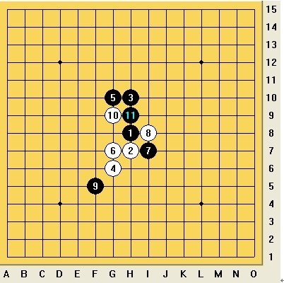
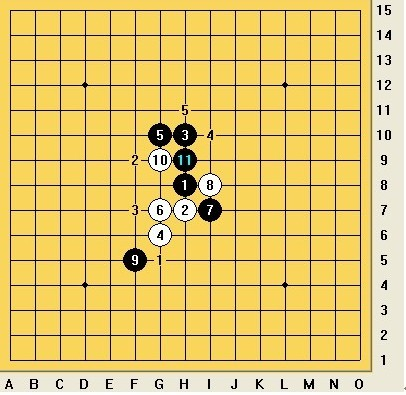
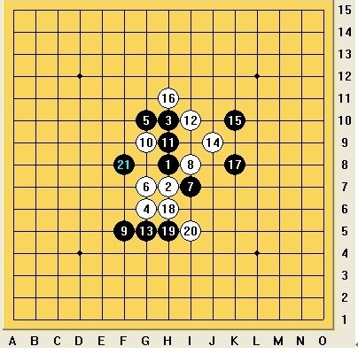

参加完全团赛后，很久没和小刀师傅下棋了，今天正好有空于是下了两局，现在将第二局分析一下：
师傅执黑开瑞星，正常应对到第 10 手，师傅第 11 手变着于 H9

这种局面第 12 手一般情况有以下五个点可以下：

因为我进攻力不强，所以选择了 I10 这个点进行防守，应对到第 21 手局面基本平衡

22 手一般下在 F7 ，我选择下在了 F6 进行交换，以下对弈至第 25 手，第 26 手有四个点可下：
/*760*90，创建于2012-2-9*/ var cpro_id = 'u761865';